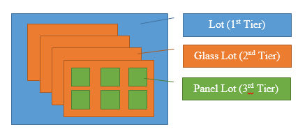

单个晶元（项）追踪
通过单个晶元（项）追踪，可以将单独晶元作为基于数量的批次进行处理和追踪。这通过称为多级别处理的功能实现。通过多级别处理，可以创建具有多层父子关系的批次的层次结构。容器或批次中的每个晶元可以拆分到各自基于数量的批次上。
分层层次结构示例
此图显示拆分为三层结构的容器的示例。第 1 层为容器。容器已拆分为多个玻璃批次（第 2 层）。每个绿色方形表示从第 2 层父批次拆分以创建第 3 层的单个晶元。

本章介绍如何创建分层批次层次结构，从父批次取消关联子批次，处理子批次，然后重新将子批次与父批次相关联。
| • | 多级别开始 |
| • | 多级别 WIP 处理 |
| • | WIP 关联 |
| • | WIP 取消关联 |
| • | 单个晶元（项）追踪 |